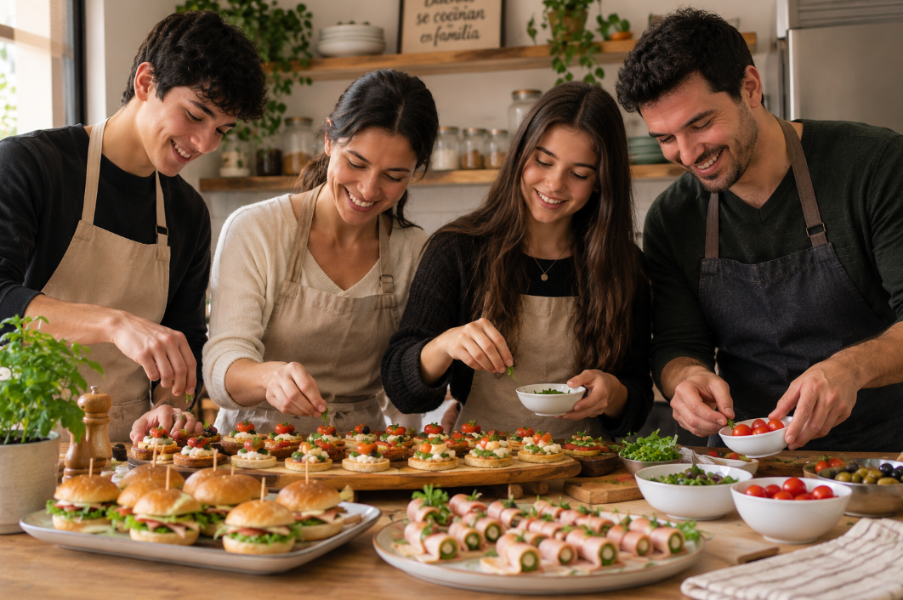

Matias Padilla Gonzales
Sobre nosotros
Mesa y Detalle es un emprendimiento familiar dedicado a la elaboración de bocaditos de calidad, creado con el propósito de acompañar y dar un toque especial a los momentos más importantes de nuestros clientes. Nos caracterizamos por la dedicación, el compromiso y el cuidado que ponemos en cada preparación, buscando ofrecer productos que destaquen por su sabor, frescura y presentación. Creemos que cada celebración merece una atención especial, por eso trabajamos para brindar opciones que se adapten a diferentes gustos y necesidades.
Nuestra dedicación y compromiso
En Mesa y Detalle, consideramos que la calidad se encuentra en cada detalle. Por ello, ponemos especial atención en el proceso de elaboración de nuestros productos, procurando mantener un equilibrio entre el buen sabor, la presentación y la satisfacción de nuestros clientes. Como emprendimiento familiar, trabajamos con responsabilidad, entusiasmo y dedicación para ofrecer una experiencia agradable en cada pedido. Nuestro objetivo es construir relaciones de confianza con nuestros clientes, brindándoles una atención cercana y procurando que cada producto refleje el esfuerzo y la pasión que dedicamos a nuestro trabajo.
Nuestros productos y servicios
Ofrecemos una variedad de bocaditos ideales para cumpleaños, reuniones familiares, fiestas, celebraciones y eventos de diferentes características. Nuestra propuesta busca facilitar la organización de cada ocasión, proporcionando alternativas que complementen la mesa y contribuyan a crear un ambiente especial. Nos enfocamos en cuidar tanto el sabor como la presentación de nuestros productos, porque sabemos que los pequeños detalles pueden marcar la diferencia en una celebración. En Mesa y Detalle, buscamos convertirnos en una opción de confianza para quienes desean compartir momentos especiales con productos preparados con dedicación y esmero.
Nuestra visión
En Mesa y Detalle, aspiramos a seguir creciendo como emprendimiento familiar, fortaleciendo la confianza de nuestros clientes y mejorando continuamente la calidad de nuestros productos y servicios. Buscamos destacar por nuestra dedicación, la atención a los detalles y el compromiso con cada pedido, manteniendo siempre la esencia familiar que nos caracteriza. Queremos que nuestros bocaditos formen parte de momentos significativos, aportando sabor, presentación y satisfacción a cada celebración. Nuestro propósito es que cada cliente encuentre en Mesa y Detalle un aliado para hacer de sus reuniones y eventos una experiencia memorable.